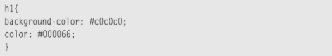

Sintaxis y Selectores CSS
Según Schulz, R. G. (2008). Diseño web con CSS. Marcombo las hojas de estilo constan generalmente, de una serie de instrucciones de estilo que definen cómo se han de representar los elementos de la página web. Los elementos se identifican normalmente mediante etiquetas HTML.
Estructura de las instrucciones de estilo
Toda instrucción de estilo consta de dos partes: el selector (el elemento que se ha de modificar) y la declaración. La declaración siempre va entre llaves y consta, a su vez, de dos partes: la propiedad (por ejemplo, color para asignar un color) y el valor correspondiente a la misma (por ejemplo #000066 para azul).
La propiedad y el valor se escriben separados por los dos puntos. El valor indicado siempre depende de la propiedad elegida. Algunas propiedades requieren una medida de longitud (por ejemplo, 20px), otras una indicación de color (ejemplo #000000). Existen, además, una selección de palabras clave previamente definidas (ejemplo left y right).
Una instrucción de estilo válida podría ser:

Esta instrucción determina que todos los títulos de primer nivel (
Se puede incluir varias declaraciones en una sola instrucción (pares propiedad/valor), en cuyo caso habrá que describir cada par separado por un punto y una coma ( ; ), por ejemplo:

Los selectores definen sobre qué elementos se aplicará un conjunto de reglas CSS.
Selectores básicos
Selector de tipo:
Selecciona todos los elementos que coinciden con el nombre del elemento especificado.
Sintaxis: eltname
Ejemplo: input se aplicará a cualquier elemento < input >.
Selector de clase:
Selecciona todos los elementos que tienen el atributo de class especificado.
Sintaxis: .classname
Ejemplo: .index seleccionará cualquier elemento que tenga la clase "index".
Selector de ID:
Selecciona un elemento basándose en el valor de su atributo id. Solo puede haber un elemento con un determinado ID dentro de un documento.
Sintaxis: #idname
Ejemplo: #toc se aplicará a cualquier elemento que tenga el ID "toc".
Selector universal:
Selecciona todos los elementos. Opcionalmente, puede estar restringido a un espacio de nombre específico o a todos los espacios de nombres.
Sintaxis: * ns|* *|*
Ejemplo: * se aplicará a todos los elementos del documento.